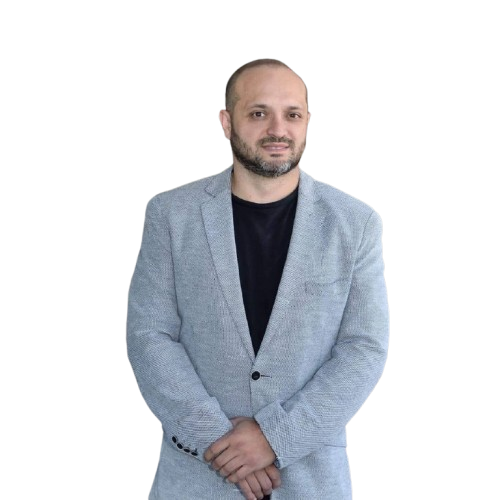

Psicólogo · Escritor · Conferencista
"La transformación real comienza desde adentro."
Publicaciones
El Método
S.E.N.T.I.R.
La ciencia y el arte
de volver a sentir la vida
La ciencia y el arte de volver a sentir la vida
Un camino integrador que une la neurociencia, la psicología clínica y el mindfulness en seis pasos transformadores: Sentir, Escuchar, Nutrir, Transformar, Integrar y Reconciliar. Una invitación a dejar de sobrevivir y volver a habitarte desde adentro, con la ternura y el rigor que el cambio real requiere.
eBook Kindle
$7,99 USD
Tapa blanda
$14,99 USD
Área legal y forense
Como Perito Psicológico acreditado, ofrezco evaluaciones técnicas e informes periciales para procesos judiciales con el más alto estándar profesional, al servicio de instituciones del sistema de justicia chileno.
Defensoría Penal Pública de Chile
Perito psicológico oficial — evaluaciones e informes para la defensa penal pública a nivel nacional
Corte de Apelaciones de Chile
Perito psicológico acreditado ante diversas Cortes de Apelaciones a lo largo de Chile
Informes periciales
Evaluación psicológica forense para procesos civiles y penales
Evaluación de daño
Determinación del daño psicológico en víctimas y afectados
Custodia y familia
Peritajes en casos de familia, menores y tuición
Testimonio experto
Ratificación de informes y comparecencia ante tribunales
Clínica & Difusión
Mi trabajo en psicología clínica se extiende a los medios de comunicación. Acompáñame todos los martes de 15:30 a 16:30 hrs, donde analizamos la actualidad y compartimos herramientas prácticas sobre bienestar y salud mental.
Puedes sintonizar el programa en vivo desde cualquier lugar del mundo a través de la señal online.
Quién soy
Soy Alexis Avendaño Raggi, Psicólogo Clínico con más de 20 años de experiencia, especialización en Neurociencia e instructor certificado de Mindfulness. A lo largo de dos décadas he acompañado a cientos de personas en procesos de transformación personal, combinando el rigor científico con una profunda comprensión del ser humano.
Como escritor y conferencista, llevo el conocimiento de la psicología y la neurociencia a un lenguaje accesible y profundamente humano. Y como Perito Psicológico acreditado ante la Defensoría Penal Pública y diversas Cortes de Apelaciones de Chile, pongo ese mismo rigor al servicio del sistema judicial.
Mi propósito es acompañar procesos de cambio real — ya sea en consulta, en un escenario, en un libro, o en un informe pericial.
Contacto
Para conferencias, peritajes, consultas clínicas o colaboraciones — escríbeme directamente.